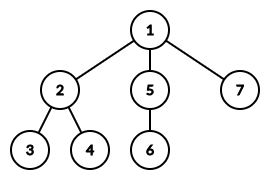

给定一棵树，每次随机染黑一个叶子 (可能会重复染黑)，求期望多少次后直径变小。
第一行包含一个正整数 $n$ ($3 \leq n \leq 5 \times 10^5$)，表示树的点数。
接下来 $n - 1$ 行，每行两个正整数 $x, y$ ($1 \leq x, y \leq n$)，表示树上的一条边。
输出一行一个整数，表示答案在模 $998244353$ 意义下的取值。
先考虑对于一棵树，删掉哪些叶子后直径会变小。
我们定义一棵树的中心 (注意和重心的区别) 为：
任取一条树的直径，如果它的长度为偶数，则直径的中点即为中心。
如果直径的长度为奇数，则最中间的一条边为中心 (有时把那条边所关联的两个顶点均称为中心)。
容易证明，一棵树的中心是固定的，不随你选的直径的变化而变化。
不妨先考虑中心为单点的情况。
我们以该树的中心 $C$ 为根，将其变为有根树。于是，这棵树的最大深度为 $\dfrac \Phi 2$ (其中 $\Phi$ 为树的直径)。
考虑所有的叶子，它们的深度有的等于 $\dfrac \Phi 2$，有的小于 $\dfrac \Phi 2$。
则删除若干叶子后，直径的变小的充要条件是，深度等于 $\dfrac \Phi 2$ 的叶子均处在 $C$ 的同一个子树中。
于是，我们把这些叶子划分为若干个集合：对于 $C$ 的每个子节点 $c$ 对应的子树，深度为 $\dfrac \Phi 2$ 的叶子定为一个集合 $S_c$ (当然 $S_c$ 有可能是空集，此时忽略不计)。最后剩下的所有深度 $< \dfrac \Phi 2$ 的叶子构成一个集合 $T$。
如下图，所有叶子被划分成了 $3$ 个集合：$S_1 = \left\{ 3, 4 \right\}, S_2 = \left\{ 6 \right\}, T = \left\{ 7 \right\}$。
因此，直径变小就等价于至多存在一个不是全黑的 $S_i$ 集合 ($T$ 集合就相当于演员，对直径不产生实质性影响)。
于是问题就转化为，每次均匀随机一个元素 (染黑)，求期望多少次后至多存在一个 $S_i$ 不是全黑的。
先考虑一个更简单的问题：每次均匀随机一个元素，求期望多少次中所有的 $S_i$ 中的元素均为黑色。
(ps: 其实这是一个经典模型，在 [uoj214]合唱队形 中已经出现过，如果忘了可以回去翻翻)
设叶子总数 $L = \left| S_1 \cup S_2 \cup \cdots \cup S_k \cup T \right|$，有效叶子总数 $C = \left| S_1 \cup S_2 \cup \cdots \cup S_k \right|$。
则我们把 $S = S_1 \cup S_2 \cup \cdots \cup S_k$ 中所有 $C$ 个叶子都染黑的过程分为 $C$ 步：每一步染黑一个新的叶子。
因此，对于第 $i$ 步，有 $C - i + 1$ 个叶子是还未染色的，因此成功的概率为 $\dfrac {C - i + 1} L$，根据几何分布的结论，期望次数为 $\dfrac L {C - i + 1}$，于是由期望的线性性质，总的轮数等于 $$ \sum_{i=1}^C \dfrac L {C - i + 1} = L \cdot H_C $$
然而现在我们并不是要求使 $S$ 中的所有叶子均染黑所需的步数，而是求至多存在一个集合有白点的步数。
因此我们可以不妨假设 $S_j$ 是最后一个有白点的集合 (幸存的集合)，则 $S \setminus S_j$ 中其它的叶子均要被染黑，这个期望的步数就是 $L \cdot H_{C - C_j}$ ($C_j = \left| S_j \right|$)。
但是这样计算会有重复：因为有可能在 $S \setminus S_j$ 中叶子均被染黑的那个时刻，$S_j$ 中的元素已经全黑了！
对于这种情况，它对 $L \cdot H_{C - C_j}$ 的贡献就是 $S$ 中所有元素被染黑的时间。
于是，我们对所有这样的 $j$ 相加，得到一个贡献和 $\displaystyle L \cdot \sum_{j=1}^k H_{C - C_j}$，在这个和中，对于每种染黑的方案，设最后染黑的集合为 $S_i$。
则对于 $j = i$，它对这种方案的贡献恰好就是前 $k - 1$ 个集合被染黑的期望时间，而对于 $j \neq i$，它对这种方案的贡献是所有元素均被染黑的期望时间。
因此对于每一种方案，它除了被 "正确地" 计算一次外，还被 "错误地" 计算了 $k - 1$ 次，其中每次错误的计算都会贡献出 $L \cdot H_C$。
于是，直接将错误的计算的贡献减掉即可，答案就是 $\displaystyle L \cdot \left( \sum_{j=1}^k H_{C - C_j} - H_C \cdot \left( k - 1 \right) \right)$。
因此只需通过预处理调和数 $H_n$，可以在 $O \left( n \right)$ 时间内解决问题。
对于树的中心为一条边 (两个点) 的情况也是类似的。
设中心为 $u - v$，则所有直径均会经过 $u - v$ 这条边，于是使用裂边操作，将其变为 $u - w - v$，则所有直径均会经过 $w$，且容易验证 $w$ 是新树的中心。
从而问题又转化为中心为单点的情况，于是问题解决，时间复杂度 $O \left( n \right)$。
(ps: 此时根节点只有两个子节点，因此实现的时候直接把 $u$ 和 $v$ 当做子树即可，无需真正地裂边)
#include <bits/stdc++.h>
typedef long long ll;
const int N = 540000, M = N * 2, mod = 998244353;
int n, E = 0, leaf;
int to[M], first[N], next[M];
int p[N], dep[N];
int inv[N], sinv[N];
int D1, D2, ret;
int cnt = 0, sz[N];
inline void add(int &x, const int y) {x += y - mod, x += x >> 31 & mod;}
void init(int n) {
int i; sinv[1] = inv[1] = 1;
for (i = 2; i <= n; ++i)
inv[i] = (ll)(mod - mod / i) * inv[mod % i] % mod,
add(sinv[i] = sinv[i - 1], inv[i]);
}
inline void addedge(int u, int v) {
to[++E] = v, next[E] = first[u], first[u] = E;
to[++E] = u, next[E] = first[v], first[v] = E;
}
void pre_dfs(int x) {
int i, y;
if (dep[x] > dep[ret]) ret = x;
for (i = first[x]; i; i = next[i])
if ((y = to[i]) != p[x])
p[y] = x, dep[y] = dep[x] + 1, pre_dfs(y);
}
int dfs(int x, int px, int d) {
int i, y, ret = !d;
for (i = first[x]; i; i = next[i])
if ((y = to[i]) != px) ret += dfs(y, x, d - 1);
return ret;
}
int main() {
int i, u, v, F, diam; ll ans = 0;
scanf("%d", &n), init(n);
for (i = 1; i < n; ++i) scanf("%d%d", &u, &v), addedge(u, v);
for (i = 1; i <= n; ++i) leaf += !next[first[i]];
ret = 1, dep[ret] = p[ret] = 0, pre_dfs(ret), D1 = ret;
ret = D1, dep[ret] = p[ret] = 0, pre_dfs(ret), D2 = ret;
if ((diam = dep[D2]) & 1) {
for (v = D2, i = diam / 2; i; --i) v = p[v];
sz[cnt++] = dfs(v, p[v], diam / 2), sz[cnt++] = dfs(p[v], v, diam / 2);
} else {
for (v = D2, i = diam / 2; i; --i) v = p[v];
for (i = first[v]; i; i = next[i]) sz[cnt++] = dfs(to[i], v, diam / 2 - 1);
}
F = std::accumulate(sz, sz + cnt, 0);
for (i = 0; i < cnt; ++i) ans += sinv[F - sz[i]];
ans = (ans - sinv[F] * (cnt - 1ll)) % mod * leaf % mod;
printf("%lld\n", ans + (ans >> 63 & mod));
return 0;
}
坑1：注意叶子总数 $L$ 和有效叶子总数 $C$ 的区别，写代码时不要混淆了。